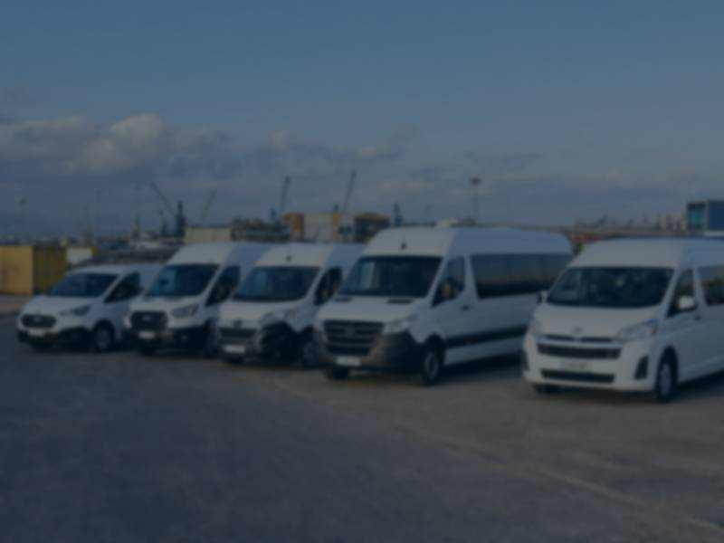
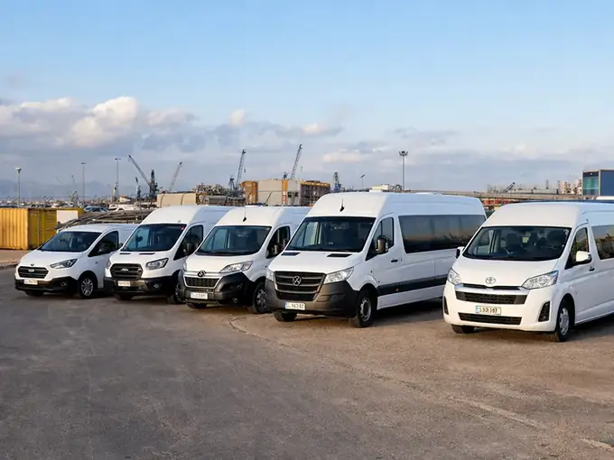
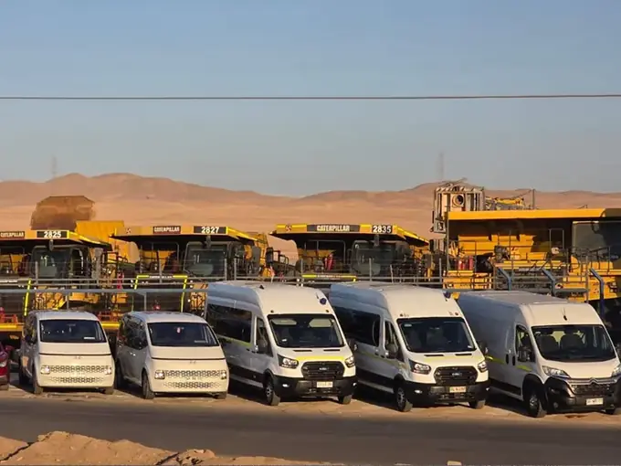

Transporte a faenas
Traslados de equipos hacia faenas mineras y plantas industriales, coordinados con los horarios de la operación.
Describir mi ruta
Turnos mineros, operaciones industriales y traslados corporativos dimensionados según ruta, dotación y frecuencia.
Hauler organiza traslados de personal para empresas industriales y mineras desde Antofagasta. Cada requerimiento se revisa según origen, destino, dotación y frecuencia antes de proponer un servicio.
Origen, destino y ventanas de traslado.
Pasajeros por viaje y tipo de servicio requerido.
Viajes puntuales, recurrentes o sincronizados con turno.

Cuatro formas de organizar traslados en Antofagasta y la región. La ruta, el horario y la cantidad de pasajeros definen cada propuesta.
Traslados de equipos hacia faenas mineras y plantas industriales, coordinados con los horarios de la operación.
Describir mi rutaViajes para equipos de trabajo, visitas técnicas y reuniones, con recorridos y horarios definidos para cada solicitud.
Describir mi rutaConexiones programadas entre el Aeropuerto Andrés Sabella, alojamientos, oficinas y puntos de trabajo.
Describir mi rutaEvaluación de traslados especiales y refuerzos de operación según ruta, pasajeros y disponibilidad.
Describir mi rutaUna conversación concreta permite definir el alcance del servicio antes de cotizarlo.
Indica origen, destino, horarios y fecha estimada de inicio.
Señala pasajeros, frecuencia y tipo de servicio que necesitas.
Con esos datos evaluamos la ruta y preparamos una propuesta ajustada a la operación.
Cuéntanos la ruta, la dotación y el turno. Con eso evaluamos el servicio y te respondemos con una propuesta concreta.
Ejemplo construido para mostrar el método de trabajo, paso a paso.
Escenario ilustrativo
Una empresa contratista debe trasladar 15 personas desde Antofagasta hacia una planta en Mejillones en turno 7x7.
Ingreso a planta en ventana horaria fija, control de acceso con registro previo y necesidad de retorno el mismo día.
Un servicio recurrente con vehículo dimensionado para esa dotación, horario de salida ajustado a la ventana de ingreso y punto de encuentro único en Antofagasta.
Se confirma ruta y horario, se entregan los datos requeridos para el acceso y se define un canal directo de coordinación para cambios de turno.
El indicador acordado es el cumplimiento de la ventana de ingreso en cada viaje, medido contra el horario comprometido. En un servicio real ese dato se reporta a la contraparte.
Este caso no corresponde a un cliente real ni a un contrato ejecutado: describe el método con el que evaluamos un requerimiento. No publicamos resultados de terceros sin su autorización.
La dotación por viaje, la ruta y la frecuencia determinan qué categoría de vehículo corresponde. Lo confirmamos al evaluar tu requerimiento.
Grupos pequeños
Movimientos puntuales de visitas técnicas, ejecutivos y equipos reducidos entre aeropuerto, oficinas y faena.
Dotaciones medianas
Cuadrillas y turnos que se movilizan juntos en un mismo horario y punto de encuentro.
Dotaciones mayores
Servicios recurrentes de mayor volumen, coordinados con los cambios de turno de la operación.
Los regímenes se acuerdan con la contraparte operacional. Si el tuyo no está en la lista, indícalo en el formulario.
La disponibilidad y las características exactas del vehículo se confirman para cada servicio, según ruta y fecha.

Preferimos declarar solo lo que podemos sostener en una reunión de evaluación.
Hauler SpA opera desde Antofagasta y entrega sus antecedentes legales y tributarios durante el proceso de evaluación comercial.
Antes de iniciar, se revisa la documentación exigida por la contraparte para conductores y vehículos asignados.
Cada servicio recurrente define una contraparte directa para cambios de turno, incidencias y ajustes de horario.
Los datos de contacto se usan solo para responder la solicitud, conforme a la Ley N° 19.628. Revisa la política de privacidad.
No publicamos certificaciones, premios ni nombres de clientes que no podamos respaldar con documentación vigente.
Trabajamos rutas dentro de la Región de Antofagasta y traslados hacia destinos del norte cuando la operación lo requiere.
¿Tu ruta no aparece? Descríbela y evaluamos factibilidad.
Consultar una rutaOperamos traslados dentro de la Región de Antofagasta, incluyendo Antofagasta, Mejillones, Calama y conexiones con el Aeropuerto Andrés Sabella. Para destinos fuera de la región evaluamos factibilidad según la ruta.
Sí. Nuestro servicio está orientado a empresas: contratistas mineros, compañías industriales y organizaciones que necesitan trasladar personal de forma puntual o recurrente.
Necesitamos origen, destino, cantidad de pasajeros, frecuencia o turno y fecha estimada de inicio. Con esos datos evaluamos la ruta y preparamos una propuesta.
No. Para el primer contacto basta con la ruta, la dotación, el turno y un medio de contacto. Los antecedentes administrativos se solicitan solo si avanzamos a la contratación.
Sí. Coordinamos conexiones entre el Aeropuerto Andrés Sabella, alojamientos, oficinas y puntos de trabajo, ajustadas a los horarios de vuelo informados.
Sí. Los servicios recurrentes se organizan según el sistema de turnos de la operación. Indícanos el régimen y la fecha de inicio para evaluarlo.
Describe tu operación en el formulario o escríbenos directo si necesitas respuesta hoy.